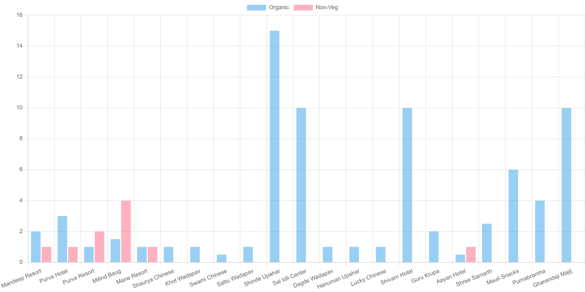

Karjat Sustainability Dashboard
🔥 Avg LPG: ~7–8 kg/day
♻️ Organic Waste: ~4–5 kg/day
🍗 Non-Veg Waste: ~1–2 kg/day
LPG Usage

Waste Analysis

Insights
• Few establishments consume majority LPG
• Organic waste is consistently high
• Non-veg waste depends on demand
Conclusion
LPG is essential for sustainable urban growth and should not be treated as a luxury. Proper waste management and efficient fuel usage can significantly improve sustainability in Karjat.